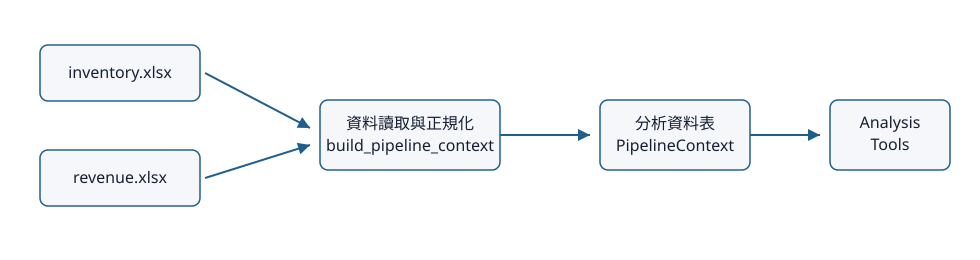
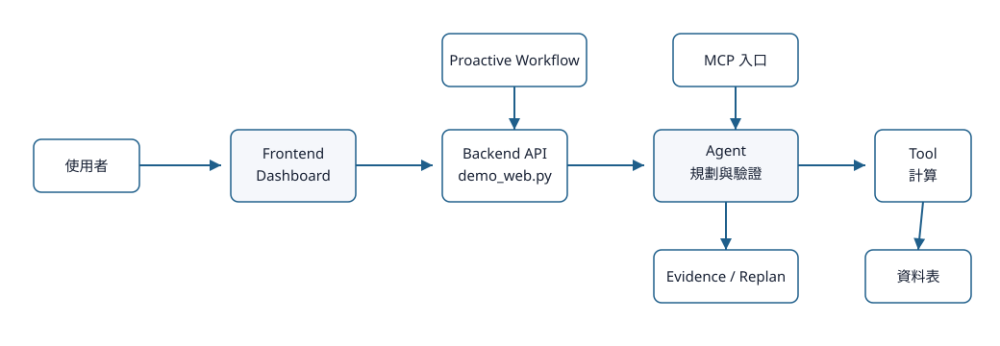

系統能回答哪些問題
這套系統可以用中文查營收與庫存。它不是讓 Agent 自由寫程式，而是讓 Agent 選擇受控的分析工具（Tool），再用回答證據（Evidence）決定能不能完整回答。
下表把「能不能用」和「怎麼執行」拆開看：走固定規則、可重現的 deterministic 流程，不代表功能沒完成；它表示這題不需要 LLM 才能穩定回答。
| 中文用途 | task family | 功能狀態 | 執行方式 | 限制 |
|---|---|---|---|---|
| 最新月份平台摘要 | latest_month_platform_summary | 可使用 | 受控 deterministic | 使用既有 deterministic answer contract。 |
| 最新月份實體摘要 | latest_month_entity_summary | 可使用 | 受控 deterministic | 使用既有 deterministic answer contract。 |
| 兩期間比較 | period_pair_compare | 可使用 | 受控 deterministic | 期間比較仍由既有 answer plan 驗證。 |
| 兩期間實體表格 | entity_period_pair_table_lookup | 可使用 | 受控 deterministic | 期間表格查詢仍由既有 answer plan 驗證。 |
| 多月實體表格 | entity_multi_month_table_lookup | 可使用 | 受控 deterministic | 多月表格查詢仍由既有 answer plan 驗證。 |
| 單一實體兩期間數值 | entity_period_pair_metric_lookup | 可使用 | 受控 deterministic | 期間數值查詢仍由既有 answer plan 驗證。 |
| 單一實體時間序列 | entity_time_series | 可使用 | 受控 deterministic | 時間序列仍由既有 answer plan 驗證。 |
| 整體趨勢 | overall_trend_analysis | 可使用 | 受控 deterministic | 趨勢為 metric operation，仍走既有 deterministic path。 |
| 實體趨勢比較 | entity_trend_comparison | 可使用 | 受控 deterministic | 趨勢比較仍走既有 deterministic path。 |
| 營收與庫存關係 | metric_relationship_analysis | 可使用 | Agentic evidence-validated | 僅描述歷史資料，不做 root cause claim。 |
| 貢獻分析 | contribution_analysis | 可使用 | 受控 deterministic | 貢獻為 metric operation，仍走既有 deterministic path。 |
| 預測不支援 | forecast_unsupported | 不支援 | 安全拒絕 | 目前沒有預測能力。 |
| 事業群到產品線鑽取 | parent_child_drilldown | 可使用 | 受控 deterministic | 鑽取仍走既有 deterministic path。 |
| 單月實體表格 | entity_month_table_lookup | 可使用 | Agentic evidence-validated | 結果受可用月份與實體 mapping 限制。 |
| 同月橫向比較 | cross_section_compare | 可使用 | 受控 deterministic | 橫向比較仍走既有 deterministic path。 |
| 表現評估 | performance_assessment | 可使用 | Agentic evidence-validated | 營收/庫存為 proxy 指標，非正式周轉指標。 |
| 風險訊號掃描 | risk_scan | 可使用 | 受控 deterministic | 風險訊號非因果判定。 |
| 單一數值查詢 | metric_lookup | 可使用 | 受控 deterministic | 數值查詢仍走既有 deterministic path。 |
| 圖表產生 | chart_request | 可使用 | 受控 deterministic | 圖表輸出仍走既有 deterministic path。 |
| 排序排名 | entity_ranking | 可使用 | 受控 deterministic | 排序為 metric operation，仍走既有 deterministic path。 |
| 時間比較 | time_compare | 可使用 | 受控 deterministic | 時間比較仍走既有 deterministic path。 |
| 資料品質 | data_quality | 可使用 | 受控 deterministic | 資料品質結果為 coverage/mapping 摘要。 |
| 診斷候選 | diagnosis | 可使用 | 受控 deterministic | 診斷候選因子不是已證實因果。 |
系統刻意不做什麼
- 不提供任意 Python、SQL 或 shell；Agent 只能選 registry 中的工具。
- 不允許任意檔案路徑；MCP arguments 出現
/、\或..會被拒絕。 - 不將描述性關係寫成因果；Writer Validator 會抓「導致」等根因宣稱。
- 不把
revenue_inventory_amount_ratio說成正式 turnover；semantic catalog 明確標示為 proxy。 - 沒有 primary evidence 時不假裝完整回答；runtime 會重新規劃（Replan）或安全停止。
- 主動草稿不自動發布；必須先 approve，再 publish。
- MCP 不可操作 approval 或 publication，只公開 allowlisted read-only tools。
使用哪些資料

正式資料來源由 config.py 定義為 data/inventory.xlsx 與 data/revenue.xlsx。analysis_pipeline.build_pipeline_context() 負責建立共用 context，real_data.py 與 data_loader.py 負責正規化與對齊；Frontend 不直接讀 Excel。
KPI
| 名稱 | metric_id | 計算口徑 | proxy | 操作 |
|---|---|---|---|---|
| 營收 | revenue_amount | 由既有 deterministic AnalysisToolbox 聚合。 | 否 | lookuptrendrankingcomparisoncontribution |
| 庫存金額 | inventory_amount | 由既有 deterministic AnalysisToolbox 聚合。 | 否 | lookuptrendrankingcomparison |
| 庫存數量 | inventory_qty | 由既有 deterministic AnalysisToolbox 聚合。 | 否 | lookuptrendrankingcomparison |
| 營收相對庫存效率 proxy | revenue_inventory_amount_ratio | 現有工具的營收/庫存 proxy；不是正式周轉率。 | 是 | rankingperformance |
Dimension
| 名稱 | dimension_id | 說明 | 允許 KPI |
|---|---|---|---|
| 月份 | month | 標準化 YYYY-MM period。 | revenue_amountinventory_amountinventory_qty |
| 事業群 | business_group | 既有對齊 entity dimension。 | revenue_amountinventory_amountinventory_qtyrevenue_inventory_amount_ratio |
| 產品線 | product_line_5 | 既有五大產品線 dimension。 | revenue_amountinventory_amountinventory_qtyrevenue_inventory_amount_ratio |
系統可能產生哪些輸出
由 answer contract render，受 Evidence 與 validator 限制。
Tool result 或 display block，可供 Dashboard 顯示。
get_chart_payload 回傳 chart-ready JSON，必要時可輸出 PNG 到 output/charts。
有部分證據，但不足以完整回答。
資料、proxy、coverage 或工具能力限制。
沒有合法工具能補足缺失證據。
本地 SQLite trace，預設 output/observability/traces.sqlite3。
主動偵測後產生的待審查草稿。
核准與發布後寫入 output/investigations。
工程細節：輸出與 state 儲存位置
config.py 定義 OUTPUT_DIR = BASE_DIR / "output"、CHART_DIR = OUTPUT_DIR / "charts"。Stateful Agent runs 寫入 output/state/agent_runs.sqlite3；Proactive workflow 寫入 output/state/proactive_workflow.sqlite3；trace 預設寫入 output/observability/traces.sqlite3。
簡化系統總圖
